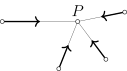

Hình học xạ ảnh
Phần 2: Trực giác đại số
Ở bài trước, ta đã sử dụng trực giác để mô tả mặt phẳng xạ ảnh. Để có thể dễ dàng làm việc hơn, ta cần một mô hình của mặt phẳng xạ ảnh.
Mô hình tọa độ
Để tính toán hiệu quả nhất, ta sẽ định nghĩa một mô hình mặt phẳng xạ ảnh được sinh ra từ không gian tọa độ.
Ta cần kiểm tra xem $\mathbb{KP}^{2}$ có thỏa mãn tất cả các tiên đề mà ta nêu ở bài trước hay không. Thay vì lần lượt kiểm tra từng tiên đề, ta chỉ cần chứng minh rằng
$\mathbb{KP}^{2}$ khi bỏ đi một đường thẳng thì đẳng cấu với $\mathbb{K}^{2}$ là xong. Giả sử $[\ell]$ là một đường thẳng trong $\mathbb{KP}^{2}$, tức là $\ell$ là một không gian
con $2$ chiều của $\mathbb{K}^{3}$. Bằng cách chuyển tọa độ, ta giả sử $\ell$ chính là không gian con $x_{3}=0$. Xét ánh xạ $\varphi$ biến mỗi không gian con $1$ chiều $P$ thành
giao điểm của $P$ với mặt phẳng $A:=\left\{\mathbf{x}\in\mathbb{K}^{3}:x_{3}=1\right\}$. Vì mặt phẳng $A$ không đi qua gốc tọa độ nên mỗi điểm trên $A$ cũng tương ứng với không
gian con sinh bởi nó. Như vậy, $\varphi$ là một song ánh, và do đó ta có thể trang bị cấu trúc affine cho $\mathbb{KP}^{2}-[\ell]$ thông qua $\varphi$.
Như vậy, để tính toán trong không gian xạ ảnh, ta thường chia các điểm $[x,y,z]$ thành hai loại, đó là $z\neq 0$ và $z=0$. Khi $z\neq 0$ ta có thể chuẩn hóa thành
$\left[\dfrac{x}{z},\dfrac{y}{z},1\right]$.
Mô hình trừu tượng
Lấy cảm hứng từ mô hình tọa độ, ta tìm một $\mathbb{K}$-không gian vector $3$ chiều chứa $\mathbb{K}$-mặt phẳng affine $\mathscr{P}$ như một siêu phẳng, sau đó bổ sung thêm không gian con song song với $\mathscr{P}$ đóng vai trò là đường chân trời. Ở đây, $\mathbb{K}$-mặt phẳng affine là một bộ ba $(\mathscr{P},\mathscr{V},\Theta)$, trong đó $\mathscr{P}$ đóng vai trò là mặt phẳng, $\mathscr{V}$ đóng vai trò là phép tịnh tiến, và $\Theta:\mathscr{P}\times\mathscr{P}\to\mathscr{V}$ đóng vai trò là hàm lấy vector: $$\Theta(P_{1},P_{2})=\overrightarrow{P_{1}P_{2}}.$$
Ta sẽ không dùng toàn bộ các trường vector, mà chỉ quan tâm đến hai loại được mô tả như sau.
-
Với mỗi $v\in\mathscr{V}$, ta có trường hằng $e_{v}$ biến mỗi điểm $P$ thành vector $v$. Bạn có thể coi nó như là hình ảnh của một phép tịnh tiến theo $v$.
Vì vậy, tập hợp tất cả các trường hằng trên $\mathscr{P}$ được ký hiệu là $\mathcal{T}(\mathscr{P})$.
-
Với mỗi $k\in\mathbb{K}$ và $P\in\mathscr{P}$, ta có trường có tâm $e_{k,P}$ biến mỗi điểm $Q$ thành vector $k\overrightarrow{QP}$. Bạn có thể coi nó như là hình
ảnh của một phép vị tự tâm $P$ tỷ số $1-k$.
Vì vậy, tập hợp tất cả các trường có tâm trên $\mathscr{P}$ được ký hiệu là $\mathcal{H}(\mathscr{P})$.

Chứng minh
- Lấy một trường hằng $e_{v}$ và một trường có tâm $e_{k,P}$. Nếu $k=0$ thì $e_{k,P}=e_{\overrightarrow{0}}$, ta có ngay kết luận. Nếu $k\neq 0$, ta lấy điểm $Q$ sao $\overrightarrow{PQ}=\dfrac{1}{k}v$. Khi đó với mỗi $R\in\mathscr{P}$ ta có $$(e_{v}+e_{k,P})(R)=v+k\overrightarrow{RP}=k\overrightarrow{PQ}+k\overrightarrow{RP}=k\overrightarrow{RQ}=e_{k,Q}(R).$$ Vậy $e_{v}+e_{k,P}=e_{k,Q}\in\widehat{\mathscr{P}}$.
- Lấy hai trường có tâm $e_{k,P}$ và $e_{l,Q}$. Nếu $k+l=0$ thì với mỗi $S\in\mathscr{P}$, ta có $$(e_{k,P}+e_{l,Q})(S)=k\overrightarrow{SP}+l\overrightarrow{SQ}=k\overrightarrow{QP}=e_{k\overrightarrow{QP}}(S)$$ nên $e_{k,P}+e_{l,Q}\in\widehat{\mathscr{P}}$. Còn nếu $k+l\neq 0$, ta chọn điểm $R$ thỏa mãn $\overrightarrow{PR}=\dfrac{l}{k+l}\overrightarrow{PQ}$. Khi đó $k\overrightarrow{RP}+l\overrightarrow{RQ}=\overrightarrow{0}$ và ta có $$(e_{k,P}+e_{l,Q})(S)=k\overrightarrow{SP}+l\overrightarrow{SQ}=(k+l)\overrightarrow{SR}=e_{k+l,R}(S),$$ suy ra $e_{k,P}+e_{l,Q}=e_{k+l,R}\in\widehat{\mathscr{P}}$.
Với ý tưởng coi $\mathscr{P}$ là một siêu phẳng của $\widehat{\mathscr{P}}$, ta đồng nhất mỗi điểm $P\in\mathscr{P}$ với trường có tâm $e_{1,P}$ và đồng nhất mỗi vector
$v\in\mathscr{V}$ với trường hằng $e_{v}$, dẫn đến $\widehat{\mathscr{P}}=\mathscr{V}\sqcup\left(\mathbb{K}^{\times}\times\mathscr{P}\right)$. Khi đó nếu lấy ba điểm không thẳng
hàng $A,B,C$ của $\mathscr{P}$ thì ta có một cơ sở của $\widehat{\mathscr{P}}$. Mỗi điểm $P\in\mathscr{P}$ lúc này có duy nhất một biểu thị tuyến tính dạng
$$P=\lambda_{1}A+\lambda_{2}B+\lambda_{3}C,$$
trong đó $\lambda_{1}+\lambda_{2}+\lambda_{3}=1$. Bộ ba $(\lambda_{1},\lambda_{2},\lambda_{3})$ được gọi là tọa độ tỷ cự của $P$ đối với hệ điểm $(A,B,C)$, hay ta cũng nói
$P$ là tâm tỷ cự của hệ điểm $(A,B,C)$ với trọng số $(\lambda_{1},\lambda_{2},\lambda_{3})$.
Vì $\widehat{\mathscr{P}}$ là một không gian vector, ta có thể định nghĩa quan hệ tương đương $\sim$ giống như mô hình tọa độ: hai phần tử $A,B$ khác $0$ được gọi là tương
đương nếu tồn tại $\lambda\in\mathbb{K}^{\times}$ sao cho $A=\lambda B$. Không gian thương $\widehat{\mathscr{P}}/\sim$ được gọi là bao xạ ảnh của mặt phẳng $\mathscr{P}$,
và được ký hiệu là $\overline{\mathscr{P}}$. Cụ thể hơn, ta có
$$\overline{\mathscr{P}}=\left(\widehat{\mathscr{P}}/\sim\right)=\left(\left[\mathscr{V}\sqcup\left(\mathbb{K}^{\times}\times\mathscr{P}\right)\right]/\sim\right)
\cong\left(\mathscr{V}/\sim\right)\sqcup\mathscr{P}.$$
Thành phần $\mathscr{V}/\sim$ chính là đường chân trời của $\mathscr{P}$ và được ký hiệu là $\infty_{\mathscr{P}}$.